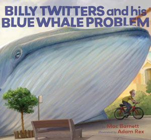

Billy Twitters and His Blue Whale Problem
Illustrated by Adam Rex
A blue whale is longer than 30 dogs lined up nose to tail. Its tongue weighs as much as 400 cats. Blue whales make terrible pets. Just ask Billy Twitters.
“Definitely funny and slyly subversive” — Kirkus Reviews (Starred Review)
“A headlong plunge into surrealism ensues when Billy Twitters's parents punish him by giving him a blue whale. The cleverness is in the idea's literal-mindedness – Billy thinking “I feel like something's watching me” as he eats his cereal, one very large eye visible behind him, and then hauling the whale to school on his bicycle. It's not supposed to make sense, and, amusingly, it doesn't.” — The New York Times
An IndieBound Top-Ten Next-List Pick
Purchase Links: